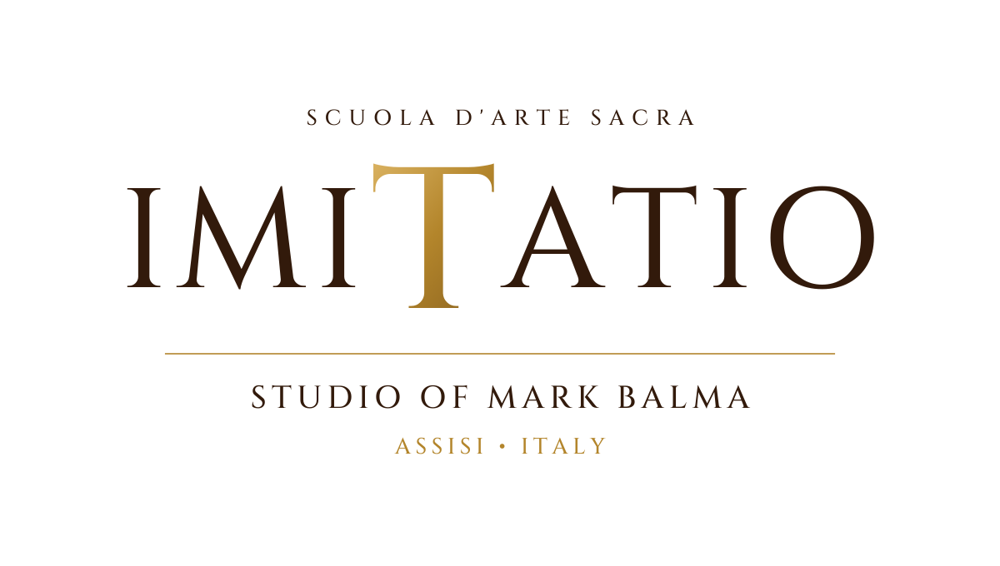
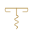

La BottegaFrom the bottega in the foothills of Assisi: prints of the maestro’s paintings and the tools, paints and materials of the workshop. Prossimamente, coming 2027.
Opening 2027

Original sacred works and portraits by the maestro Mark Balma, painted in the bottega in the foothills of Assisi.
His commissions include The Prodigal Son and My Dove in the Clefts of the Rock, Show Me Thy Face, created for the Basilica of St. Mary, Minneapolis and the Cathedral of Saint Paul; the frescoes of Grace Made Visible at Our Lady of Grace, Edina; Women of Faith for the Church of the Immaculate Conception, Terni; and portraits of four US Presidents and three British Prime Ministers for Presidential Libraries.
By inquiry
Fine prints of works by Mark Balma.
Tools of the bottega.
Paints and pigments.
A studio apron bearing the Imitatio mark.
A studio easel.
A first set of materials for drawing and painting.
A kit for gilding.

A cotton T-shirt bearing the Imitatio mark.
A mug for the morning coffee, with the Imitatio mark.
Stemmed glasses for the table, etched with the Imitatio mark.

Il cavatappiA waiter’s corkscrew bearing the Imitatio mark.
A linen tea towel for the kitchen, with the Imitatio mark.
A sketchbook for drawing, with the Imitatio mark.
Olive oil from Umbria, in an Imitatio bottle.
Grazie. Pace e Bene from Assisi.